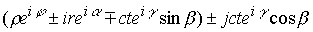

|
В. И. ЕЛИСЕЕВ ВВЕДЕНИЕ В МЕТОДЫ ТЕОРИИ
ФУНКЦИЙ ПРОСТРАНСТВЕННОГО КОМПЛЕКСНОГО ПЕРЕМЕННОГО |
|
ГЛАВА 8. КЛАССИФИКАЦИЯ МИКРОЧАСТИЦ. СТРУКТУРА ФИЗИЧЕСКОГО ПРОСТРАНСТВА МИКРОЧАСТИЦ СООТВЕТСТВУЕТ СТРУКТУРЕ МНОГО СВЯЗНОГО КОМПЛЕКСНОГО ПРОСТРАНСТВА.
8.1 Модели микрочастиц в гравитационном электрическом и лептонном комплексном пространстве. Соответствие между изолированными направлениями в комплексном пространстве и зарядовыми сопряжениями микрочастиц. Квантовые числа микрочастиц отражение много связности комплексного пространства.
Всеобщая взаимосвязанность и взаимопревращаемость элементарных частиц свидетельствует о том, что каждая частица состоит из комбинации таких же элементарных частиц или в сущности существует единая первооснова или единая общая первоматерия (как принято говорить).
В этой главе классификация микрочастиц проведена совершенно на новой основе, чем это осуществлено (неуспешно) в настоящее время. С этих позиций критика существующих классификаций становится ненужной.
За первооснову – первоматерию принято комплексное пространство, в котором локальная концентрация энергии происходит в соответствии с его структуризацией. В свою очередь будет показано, что свойства микрочастиц, закодированные современными экспериментаторами (спин, изоспин, заряды и т.д.) есть отражение свойств комплексного пространства.
Экспериментальная и теоретическая физика установила, что микрочастица это частица вещества и полевой материи. Полевая материя является переносчиком взаимодействия. Теоретическая физика стремится к созданию единой теории поля, к объединению всех полей взаимодействия: гравитационного, слабого, сильного и т.д. Поля описываются матрицами, уравнениями, всевозможными комбинациями матриц числовых с векторными полями. Например, классическая физика имеет дело с двумя типами объектов- частицами и волнами, осуществляющими взаимодействие между частицами. Квантовая физика устранила эту двойственность, рассматривая частицы и волны как проявление свойств одного и того же объекта. Квантовые поля вводятся для описания частиц и взаимодействия между ними. Поля зависят от координат и времени и описывают так называемое, локальное состояние вакуума. Поля представляют математические объекты, определяемые операторами и не являются больше обычными комплексными функциями.
Предсказательная сила полевых теорий к настоящему времени не дает основания утверждать, что описано то полевое пространство, в котором существуют объективно все формы материи. Не выяснен код структуризации пространства с ростом ее размерности. Экспериментаторы открывают все новые микрочастицы и резонансы, наделяя их новыми зарядовыми спряжениями. Открыто пять кварков и предсказывается открытие шестого. Таким образом, количество единиц, претендующих на фундаментальные увеличивается. Не указана та симметрия, которая отвечает за электрический или лептонные заряды и т.д. Многие характеристики микрочастиц закодированы и не имеют связи с характеристиками того пространства, в котором определены эти микрочастицы. Все это говорит о том, что к настоящему времени нет того математического пространства, которое претендует по своим характеристикам на описание пространства объективно существующей материи. Экспериментаторы в связи, с этим открывая все новые частицы вскрывают все новые характеристики пространства, в котором реализован объективный мир. Преобразования Лоренца и открытие интервала Минковским остается самым существенным вкладом в изучение пространства.
Физика микрочастиц открывая новые микрочастицы одновременно открывает закономерности математического аппарата, который описывает поля и предсказывает в них то или иное физическое явление (каналы распада микрочастиц или их образование). В настоящее время нет описания пространства, обладающего той связностью, которая рас кодировала бы тот огромный материал, который накоплен в экспериментах. Фундаментальное понятие связности, которое дало особенно сильные результаты в теории Коши, вообще не отражено при классификации микрочастиц.
Таким аппаратом являются методы теории функций пространственного комплексного переменного (ТФКПП). Структура много связного пространства, описываемая этим аппаратом, соответствует структуре физического пространства микрочастиц.
Всеобщая взаимосвязность и взаимопревращаемость элементарных частиц говорит о наличии единого энергетического поля и единого математического аппарата. Локальная структуризация поля, вызванная концентрацией энергии в замкнутом объеме, воспринимается как микрочастица, которая может сохранять свои структурные параметры определенное время без изменения. Варианты локальной концентрации энергии, приводящие к образованию микрочастицы находятся в прямой зависимости от свойств поля. Эти свойства в экспериментальных исследованиях характеризуются квантовыми числами микрочастиц: фундаментальное свойство заряда быть положительным и отрицательным; заряды: электрический, лептонный, барионный; спины частиц: спин и изотопический спин; заряды: странность, шарм, и так далее, цветовой заряд.
Это многообразие экспериментальных данных необходимо поставить в однозначное соответствие алгебре и геометрии комплексного пространства.
4-х мерное комплексное пространство в общем координатном виде представляется в виде
|
|
(8.1.1.) |
МИКРОЧАСТИЦА ЕСТЬ ЛОКАЛЬНАЯ СТРУКТУРИЗАЦИЯ ЭНЕРГИИ В ПРОСТРАНСТВЕННО ВРЕМЕННОМ КОМПЛЕКСНОМ ПРОСТРАНСТВЕ.
Введенное и исследованное в главах 1, 3, 5, 7 пространство обладает преимуществом перед другими тем, что имеет подпространства делителей нуля, которое может интерпретироваться как полевое пространство. На рис 8 показано образование мнимой точки этого подпространства. Две составляющие координаты имеют мнимый суммарный модуль. Таким образом, наряду с действительным модулем, который отвечает за частицу вещества, в пространстве каждая точка имеет мнимый модуль, который отвечает за полевую часть материи-микрочастицы. Геометрическая интерпретация комплексного пространства и подпространства делителей нуля подробно изложены в 1-1-3, 1-1-4, 1-1-5. В плоскости сингулярность, ответственная за много связность, определяется делением на ноль. В пространстве наряду с этим сингулярность определяется наличием делителей нуля, которые образуют в начале сферических координат сферическую
В главе 3 преобразования Лоренца (которые являются основными в математическом аппарате теории относительности) реализованы в комплексном пространстве чисел. Координатная запись преобразований Лоренца и пространство Минковского исключили из рассмотрения математический аппарат, который отвечает за полевую материю. Комплексное пространство является наиболее полным и более адекватно отражает процессы физического мира.
Определена симметрия пространства, которая отвечает за фундаментальные свойства заряда. В пространстве Минковского такую симметрию не удалось найти до настоящего времени, так как она (симметрия положительного и отрицательного заряда) была выброшена алгеброй, применяемой при определении интервала. Гравитационно-электрический потенциал в комплексном выражении установил, (рассмотренный в главе 7.7), что за положительный заряд любого структурного уровня отвечает положительное изолированное направление типа
, за отрицательный заряд . Оба заряда могут быть образованы как в верхней так и нижней полусфере .Свойство пространства образовывать положительный и отрицательный заряды в верхней и нижней полусфере закодировано в теоретической физике как наличие спина у частицы. Спиновой момент поворачивает заряд на угол
без изменения знака частицы. Электрон в атоме водорода может повернуться на 180 градусов не меняя своего зарядового сопряжения.Пространство (8.1.1) имеет кроме этих двух зарядовых направлений третье
, связанное с комплексомКомплекс (8.1.1) путем выделения изолированных направлений может быть последовательно преобразован

Из первого члена выделим направление

Подставляя это выражение в предыдущее получим
Таким образом, комплекс представлен как сумма изолированных направлений с весовыми коэффициентами, которые для каждого члена обозначим через  а, б, с, д, так что будем иметь
а, б, с, д, так что будем иметь
|
(8.1.2) |
Современная классификация микрочастиц позволяет представить микрочастицу как сумму изолированных направлений со своим набором весовых коэффициентов.
Структура микрочастиц формируется в комплексном пространстве, определенном на базе алгебры с операциями обычных действительных чисел. Делители нуля также подчиняются обычным операциям с действительными числами. Комплекс объединяет пространство чисел действительного модуля с подпространством чисел, не имеющих модуля. Делители нуля не имеют суммарного модуля. Подпространство делителей нуля адекватно световому конусу в цилиндрических координатах и сворачивается в изолированные направления в сферических координатах. Изолированные направления создают пространственную сингулярность и разные уровни связности.
Микрочастица является многосвязным пространственным образованием, вложенных друг в друга изолированных туннелей.
Таблица стабильных и квазистабильных частиц включает: фотон, лептоны, мезоны, барионы, кварки. Мезоны, барионы, кварки кроме электрического заряда имеют странный заряд, очарованный, прелестный. В настоящее время ищут частицу с зарядом правдивости. Лептонный уровень включает нейтрино электронное, мюонное, тау-нейтрино и соответственно электрон, мюон, тау-лептон. Кодировка физических свойств микрочастиц говорит о том, что физика элементарных частиц не имеет математического аппарата для описания многообразия свойств микромира.
Алгебра комплексного пространства и его геометрия доказывают, что все известные уровни микрочастиц подчиняются одной схеме структуризации в пределах комбинаций всего двух зарядовых сопряжений (
Как не фантастично это воспринимается, однако подтверждается экспериментально по выявленным каналам распада частиц, законами сохранения и так далее ...
Мини оглавление:
[0], [1.1.1, 1.1.2, 1.1.3, 1.1.4, 1.1.5, 1.1.6, 1.1.7, 1.1.8, 1.2, 1.2.1, 1.2.2, 1.2.2.a, 1.2.2.b, 1.2.2.c, 1.2.2.d, 1.2.2.e, 1.2.2.f, 1.2.2.g, 1.2.2.h, 1.2.3, 1.3.1, 1.3.2, 1.3.3, 1.3.4, 1.3.5, 1.3.6, 1.4.1, 1.4.2, 1.5, 1.6, 1.7.1, 1.7.2, 1.7.3.1, 1.7.3.2, 1.7.3.3, 1.7.4.1, 1.7.4.2, 1.8.1], [2.1, 2.2],[3.1, 3.2, 3.3, 3.4.1, 3.4.2, 3.4.3, 3.4.4, 3.4.5],[4.1, 4.2, 4.3, 4.4],[5.1, 5.1.Рис.52, 5.2, 5.3, 5.4, 5.4.Т1, 5.4.Т2, 5.4.Т3, 5.5.1, 5.5.2, 5.5.3, 5.5.4],[6.1.1, 6.1.2, 6.2.1, 6.2.2, 6.2.3, 6.2.4, 6.2.5, 6.3, 6.4.1, 6.4.2, 6.5.1, 6.5.2],[7.1, 7.2, 7.3, 7.4, 7.5, 7.6, 7.7.1, 7.7.2, 7.8.1, 7.8.2, 7.8.3, 7.9],[8.1, 8.2.1, 8.2.2, 8.3, 8.4, 8.5, 8.6, 8.6.T1, 8.7, 8.8.1, 8.8.2, 8.8.3, 8.9.1, 8.9.2, 8.9.3, 8.10, 8.10.T2, 8.10.T3],[9.1, 9.2, 9.3, Рис.88, 89, 90, 91, 92, 93, 94, 95, 96, 97, 98, 99, 100],[10.1, 10.2, 10.3, 10.4, 10.5, 10.6, 10.7, 10.8, 10.9, 10.10, 10.11, 10.12, 10.13, 10.14, 10.15.1, 10.15.2, 10.16.1, 10.16.2, 10.17, 10.18],[11]
Размещенный материал является электронной версией книги: © В.И.Елисеев, "Введение в методы теории функций пространственного комплексного переменного", изданной Центром научно-технического творчества молодежи Алгоритм. - М.:, НИАТ. - 1990. Шифр Д7-90/83308. в каталоге Государственной публичной научно-технической библиотеки. Сайт действует с 10 августа 1998.
E-mail: mathsru@gmail.com